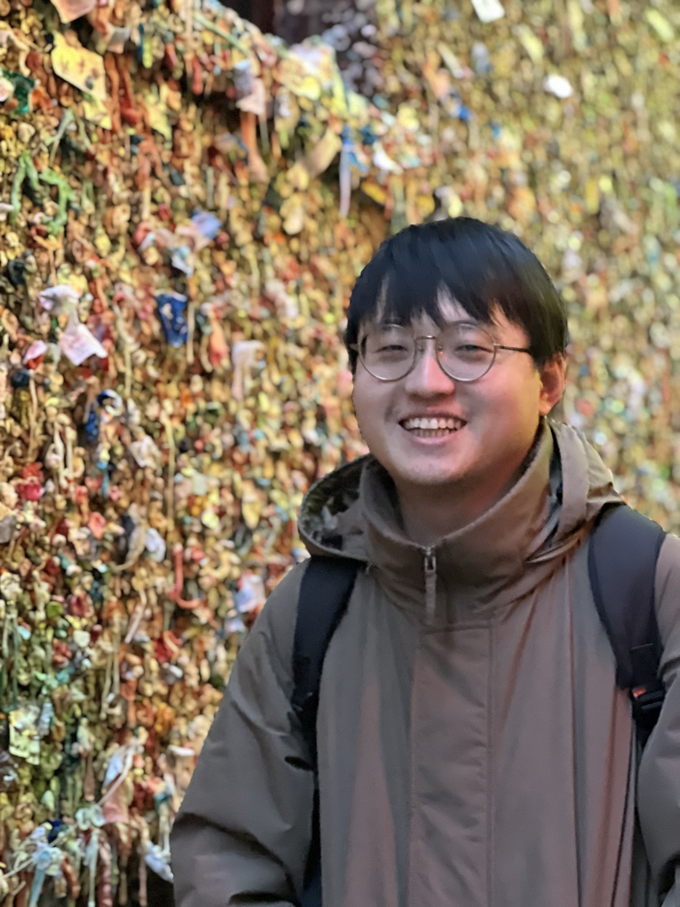

"The wand chooses the wizard."
I am an incoming Ph.D. student at the David R. Cheriton School of Computer Science, University of Waterloo, where I will be advised by Prof. Jimmy Lin. I received my M.S. from National Tsing Hua University under the supervision of Prof. Yi-Shin Chen, and my B.S. from National Chung Cheng University advised by Prof. Sun Wu and Prof. Jian-Jhih Kuo. Before starting my doctoral studies, worked as a Machine Learning Engineer at CyCraft with Dr. Cheng-Lin Yang, building transparent and reliable RAG pipelines. I also worked as a Research Engineer at Yahoo, implementing topic clustering, personalized news recommendation, and multi-document summarization. My research interests lie at the intersection of natural language processing and information retrieval, with a focus on document understanding and retrieval-augmented generation.
-
Preprint
arXiv 2026
-
Oral
ECIR 2026 @ Delft, NetherlandsAcceptance rate: 22%
-
Poster
ECIR 2026 @ Delft, NetherlandsAcceptance rate: 34%
-
Oral
CIKM 2024 @ Boise, United StatesAcceptance rate: 23%
-
Oral
IEEE IRI 2023 @ Bellevue, United StatesAcceptance rate: 29%